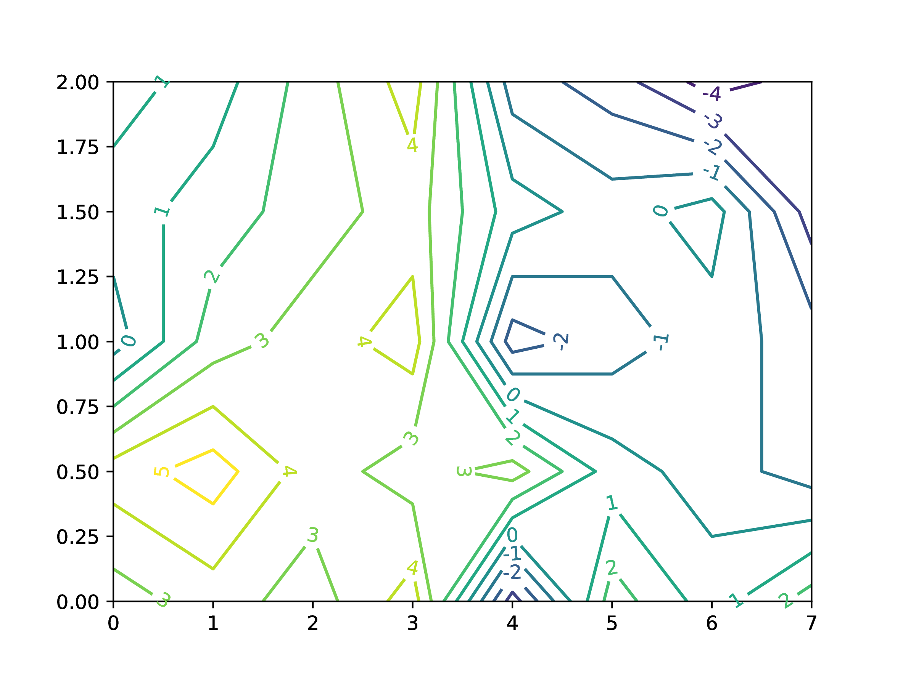

|
Plots library in julia is very powerful for plotting and I have rarely needed any other plotting library. However its documentation seems lacking in explaining its features, especially when you want to plot contours. So this page explains some of the common features of the function contour() which I need to use often.
Lets consider a grid as shown in Figure 1. Each dot on the grid is a point with (x, y) coordinate pair and has an associated value of elevation of the point from ground level (z). The grid is spaced at an interval of 1 unit in x and 0.5 unit in y.
Lets plot contours on this grid.
>>> |
x = 0:1:7 |
>>> |
y = 0:0.5:2 |
>>> |
And lets prepare the z matrix (note that the matrix is flipped vertically!).
>>> |
z = 0.5 .+ [102 103 102 104 96 102 100 102; 104 105 103 102 103 100 99 98; 99 102 103 104 97 98 99 98; 100 101 102 103 100 99 100 96; 101 100 102 104 98 97 95 96] |
>>> |
using Plots |
>>> |
contour(x, y, z) |
>>> |
You can specify limits on contours i.e. the lowest contour and highest contour using clims. Only contours within this range will be plotted. The intermediate contour levels will be decided by the library.
>>> |
contour(x, y, z, clims=(100, 103)) |
>>> |
However if you want to have specific levels to be plotted then use levels argument.
>>> |
contour(x, y, z, levels=collect(95:1:105)) |
>>> |
Labels on each contour can be added by simply using contour_labels=true in arguments.
>>> |
contour(x, y, z, levels=collect(95:1:105), contour_labels=true) |
>>> |
But what if you want some custom label to your contours and not the values? In this particular case let's say you want the elevation with respect to level of 100, i.e. a 101 contour should have label 1 and a 98 contour should have label \(- 2\). This is currently not possible with default gr() backend. We need PyPlot library for this. In order to ensure that this library doesn't overwrite the functions from Plots library, we will import it and use its functions with qualifier.
>>> |
import PyPlot |
>>> |
levels = 95:105 level_labels = ["$(i-100)" for i in levels]; c1 = PyPlot.contour(x, y, z, levels=levels, contour_labels=true) |
>>> |
PyPlot.clabel(c1, fmt=Dict(zip(levels, level_labels)), inline=1); |
>>> |
PyPlot.savefig("label_format.pdf") |
>>> |
PyPlot.close_figs() |
>>> |

© Digvijay Patankar, 2022